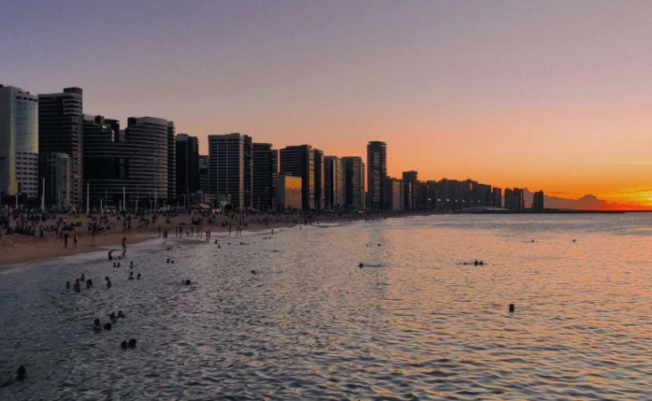

Fortaleza, capital do Ceará, não é a cidade em que eu nasci mas certamente é um destino fascinante marcado por seu sol radiante o ano inteiro e um litoral urbano vibrante. Uma cidade entre as capitais do nordeste que tem como uma das faixas de areia mais conhecidas a Praia do Futuro. Famosa pelas suas belas praias, Fortaleza tem como um dos principais cartões-postais as praias de Iracema e Meireles, que conectam a energia da cidade ao balanço das ondas e um belo calçadão.
O grande coração pulsante da cidade é a Avenida Beira-Mar, um extenso calçadão que reúne moradores e turistas ao fim do dia para caminhadas, passeios de bicicleta e o contemplation de um pôr do sol inesquecível. É ali também que acontece a tradicional Feirinha do Náutico, repleta de artesanato local e rendas, cercada por ótimos restaurantes e quiosques que traduzem com perfeição o espírito acolhedor e festivo do povo fortalezense.
